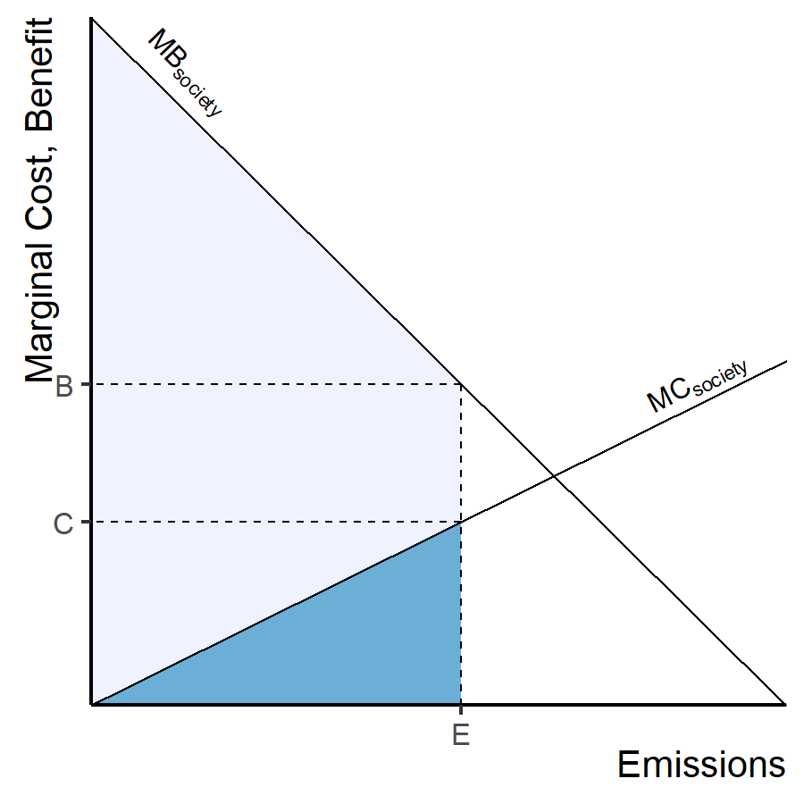
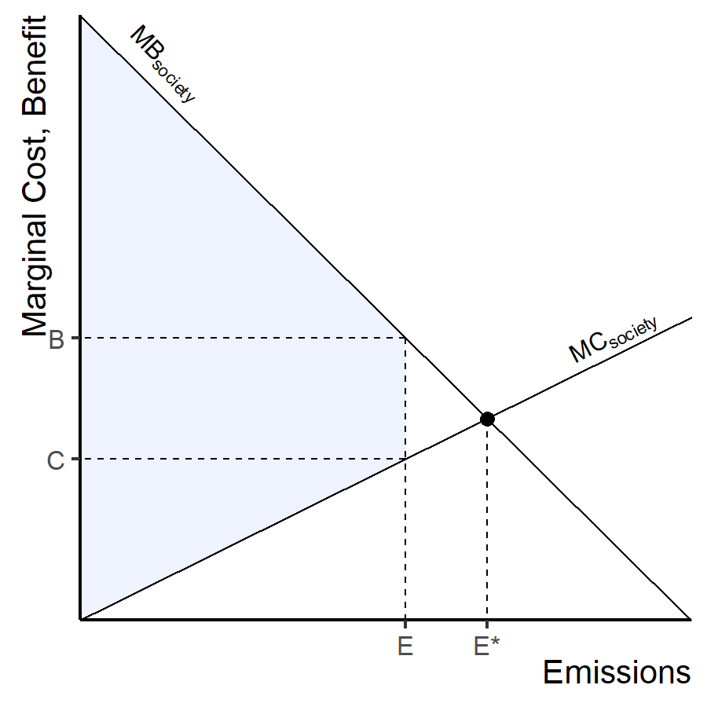
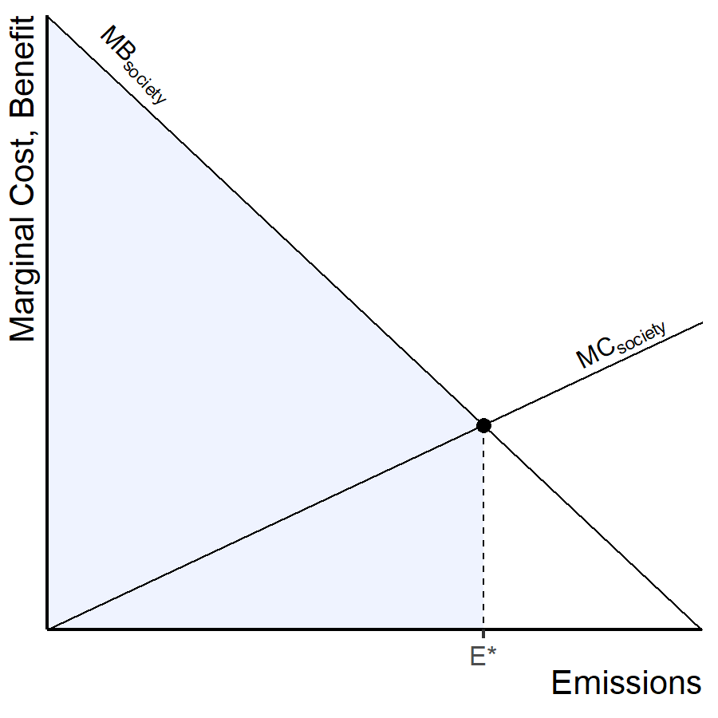
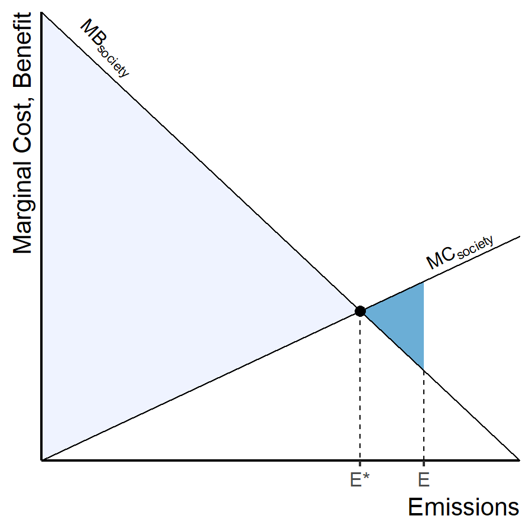
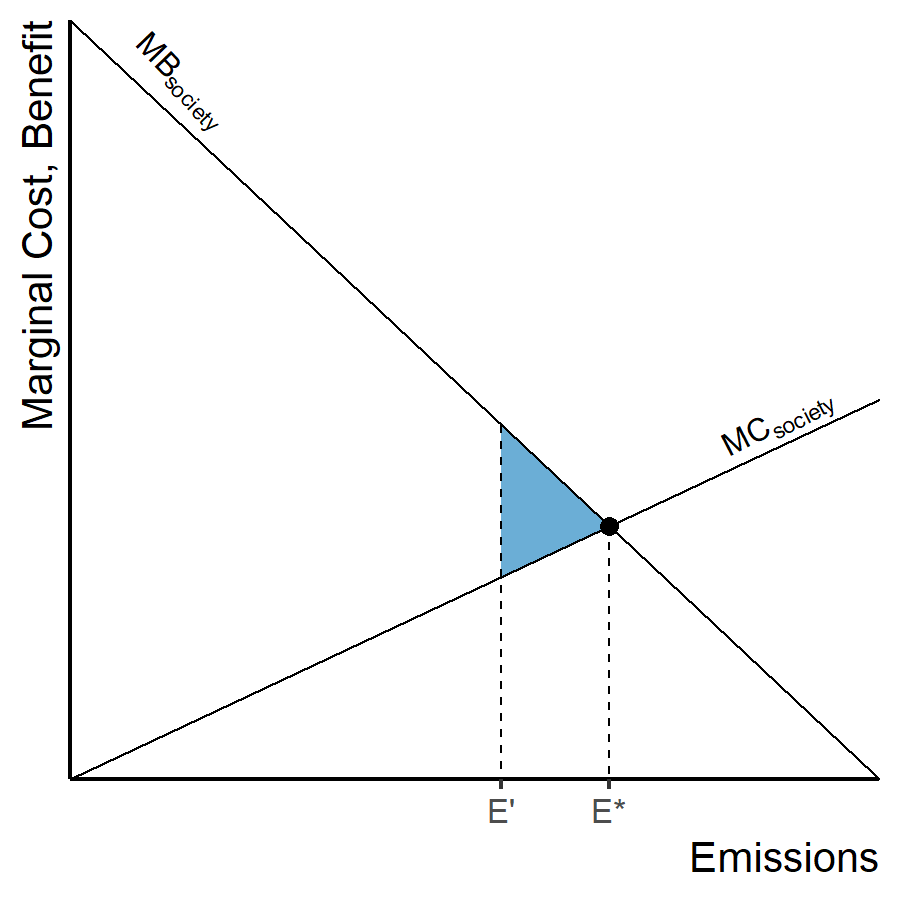

Putting a Price on Carbon Emissions
EES 3310/5310
Global Climate Change
Jonathan Gilligan
Class #30: Monday, April 4 2022
Review of Costs and Benefits
- Total gross benefit = area under MB
- Total gross cost = area under MC
-
Total net benefit = gross benefit − gross cost
- Light gray trapezoid

Total Net Benefit

Optimum Emissions
- Optimum emissions = E*
- EPA regulations allow E* emissions
- Total net benefits are maximized.

Deadweight Losses
- Optimum emissions = E*
- EPA regulations allow E’ emissions
- Deadweight Loss (dark blue triangle) = difference between actual net benefit and optimum net benefit

Deadweight Losses
- Optimum emissions = E*
- EPA regulations allow E’ emissions
- Deadweight Loss (dark blue triangle) = difference between actual net benefit and optimum net benefit

Regulation
Regulation
- Command and Control
-
Market-Based Regulation
- Put a price on externalities
- Let the market decide best balance between costs and benefits of pollution
- Pigovian tax:
- Tax equal to social cost
- Directly compensate people hurt by pollution
- Or rebate other taxes: indirect compensation
- Or invest in socially beneficial projects
- Clean energy
- Infrastructure to adapt to climate change
- Compensate out-of-work coal miners
- Tax equal to social cost
Nordhaus on Pigovian Taxes
- Taxes on something makes people do less of it
- We want people to work, don’t want them to pollute
- But we tax working and don’t tax polluting
- Revenue-neutral carbon tax:
- Raise tax on CO2, cut payroll taxes
Details
- People don’t like paying taxes
- Invisible taxes
- Charge tax when fossil fuels are extracted from ground or imported
- Fossil fuel producer pays tax, passes cost on to consumers
- Taxes → higher prices → less consumption
- Higher fuel prices:
- Incentive to buy energy-efficient products
- Incentive to invent, produce, market efficient products
- Clean energy becomes more competitive
Simplicity of Carbon Prices
-
Command and Control:
- Government has to assess emissions & costs for all kinds of technology
- Green consumers:
- To reduce carbon footprint, research and calculate emissions embedded in products & services
- Pricing carbon:
- Simple calculation: tax carbon content of fuels
- Consumers receive simple price signal:
- Shop for lowest price to reduce carbon footprint
Difficulties
- Setting the correct tax rate is hard
- Social cost of carbon is uncertain
- Social cost depends on total emissions now & in the future
- Set tax to marginal cost based on total emissions to date
- Tax rises over time
Difficulties
- People are not always rational consumers
- Both as individuals and as organizations
- Often don’t notice small changes in price
- Often don’t recognize opportunities to save through efficiency & conservation
- Importance of calling people’s attention to places they could cut emissions and save money
Difficulties
-
Offshoring
- If US sets carbon tax, India does not, companies will shift production from US to India
- Big problem unless carbon tax is applied to all countries
Difficulties
- Lack of control:
- Actual emissions depend on both price and
consumer demand
- If regulators underestimate demand, emissions and warming will be greater than goal
- But if social cost is correct, this may mean benefits of energy consumption exceed damage from warming
- Actual emissions depend on both price and
consumer demand
Carbon Taxes
Example tax calculations

Tax necessary to stabilize at 2.5°C warming
Impact of $25/ton tax
| Item | Price increase |
|---|---|
| Coal | 134.0% |
| Electricity | 31.0% |
| Natural gas | 30.0% |
| Gasoline & petroleum products | 11.0% |
Impact of $25/ton tax
on Household Spending
| Item | Tons CO2 | Cost of tax | Spending increase |
|---|---|---|---|
| Annual electricity for one home | 9.34 | $230.00 | 19.00% |
| Economy-class international flight | 4.68 | $120.00 | 8.00% |
| Annual phone & internet | 0.01 | $0.36 | 0.04% |
| Annual total consumption for one household | 30.00 | $740.00 | 0.90% |
Impact of $25/ton tax
on National Economy
| Year |
Tax rate ($/ton) |
Emissions (billion ton) |
Revenue ($ billion) |
Revenue (% GDP) |
|---|---|---|---|---|
| 2010 | $0 | 6.30 | $0 | 0.000% |
| 2015 | $25 | 5.90 | $147 | 0.960% |
| 2020 | $30 | 5.50 | $168 | 0.970% |
| 2025 | $42 | 5.40 | $225 | 1.140% |
| 2030 | $53 | 5.20 | $277 | 1.250% |
- Tax starts in 2015 at $25 per ton
- Rise steadily so emissions stabilize at 2000 levels by 2030
- Carbon tax can be used to reduce deficit or cut other taxes
- However, this tax seems very inadequate to limit warming to 2°C.
- The longer we wait, the higher the tax must be to achieve a policy goal.